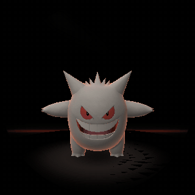
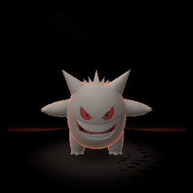
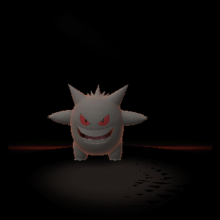

👻 VBALL — PHONE PREVIEW
build 2.1 · filmed preview

What you're watching — his life in the void, then a tap on the
right glass (he comes to that spot), a held tilt, a shake (the tumble),
and the leap at the glass.


same pose: centre · back · at your glass
This is a film rendered from the exact code in build 2.1 —
the look and the beats are real, but it is not a live simulation: taps
here don't poke him. The live, pokeable preview is ready to build and
waits on one approved compiler download (NOTES.md in this release).
Preview shows behavior/look from the same code; panel color and
real-device speed are proven only on the charm.
Film note for 2.1: this film was re-rendered from the pet-layer code
the 2.1 build links, and the re-render came out byte-identical to
the previous film — the 2.1 update changed how frames reach the
glass (the render diet) and how touch is sampled, not the look or
the beats shown here. The device shell itself is not shown in
this film.